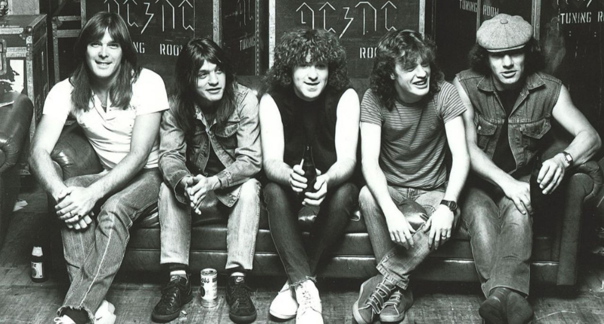
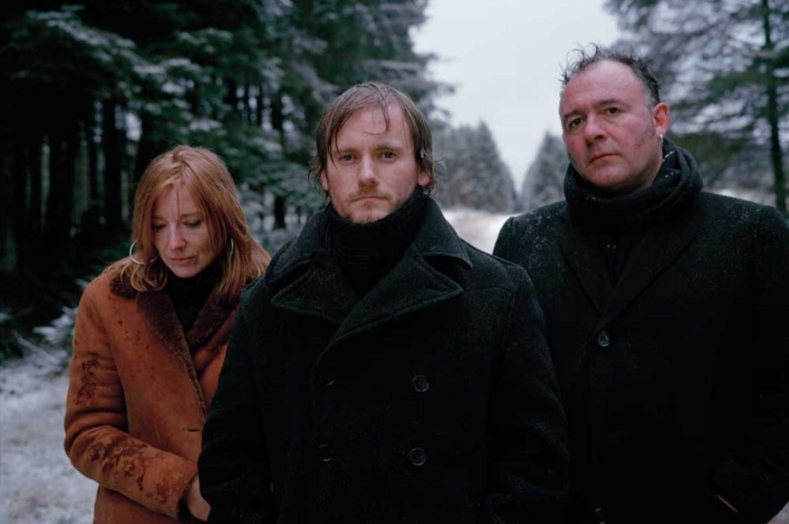
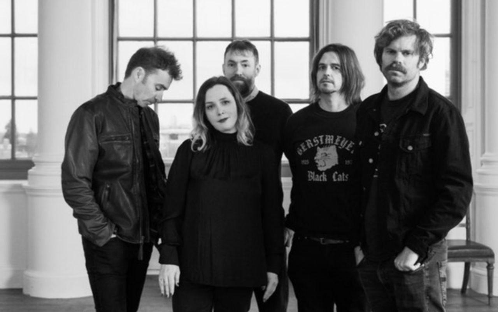

A BRIEF HISTORY OF ART ROCK! |
|||||
| Home | About | Contact | Video | Music | Gallery |
|
AC/DC are an Australian rock band formed in Sydney in 1973 by Scottish-born brothers Malcolm and Angus Young. Their music has been variously described as hard rock, blues rock, and heavy metal; however, the band themselves describe their music as simply "rock and roll".  Portishead are an English band formed in 1991 in Bristol. They are often considered one of the pioneers of trip hop music. The band are named after the nearby town of the same name, eight miles west of Bristol, along the coast.  Slowdive are an English rock band that formed in Reading, Berkshire in 1989. The band consists of Rachel Goswell on vocals and guitar, Simon Scott on drums, Neil Halstead on vocals and guitar, Nick Chaplin on bass and Christian Savill on guitar.  | |||||
Design by Mahshidsaed © 2022 |
|||||